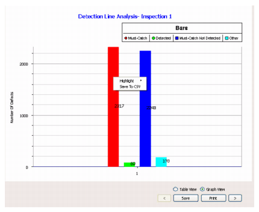
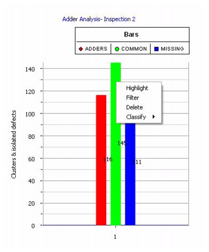
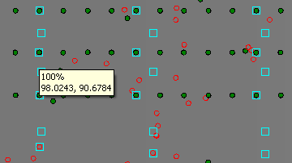
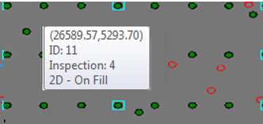
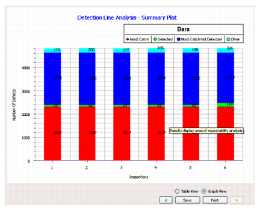
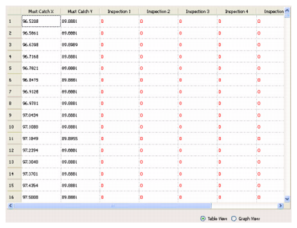

For a detection
line graph, the analysis uses the Must Catch file as reference inspection
and the results are shown in a bar chart with four bars.
Procedure
- Select Detection Line > Detection Line Graph in
the Analysis Types area. A bar chart is generated as shown in Figure 1.
Figure 1. Detection Line Bar
Chart
The graph bars represent the
following in order of appearance:
Must-Catch —
Represents all defect locations that are present in the Must Catch Defects
file.
Detected —
Represents the detected defects in the current inspection with respect
to the Must Catch Defects file.
Must-Catch Not Detected —
Represents the must Catch defect locations that are not detected
in current inspection.
Other —
Represents other defects in the current inspection that are not
in the grid.
- The detection line graph is
computed for all open inspections and can be navigated to using
the arrow buttons at the bottom of the Results Viewing Area.
- You can different perform
operations from a right-click menu on the detection line graph,
depending on the type of defect.
The results are displayed as
bar charts. You can apply various operations on the defects represented
in a given bar of bar charts. To apply the operations, right click
on any bar and select from the menu that appears.
Figure 2. Example Operations
on Bar Charts
The options that appear in
the menu depend on the defect type.
For Must-Catch and Must-Catch
Not Detected defects:
Table 1. Options for Must-Catch and Must-Catch
Not DetectedOption
|
Description
|
|---|
Highlight
|
Highlights the defects
falling in a bar. In the Defect Map, the defects are highlighted
in cyan color, and in the Defect List, they are highlighted in yellow
color. The user can highlight defects of multiple bars at the same
time
|
Save to CSV
|
Save Must-Catch Defect
locations to a CSV file.
|
For Detected and Other defects:
Table 2. Options for Detected and OtherOption
|
Description
|
|---|
Highlight
|
Highlights the defects
falling in a bar. In the Defect Map, the defects are highlighted
in cyan, and in the Defect List, they are highlighted in yellow.
You can highlight defects for multiple bars at the same time.
To undo the highlight:
Re-click the Highlight option.
Click on any defect in Defect Map.
Click on any defect in Defect List.
|
Filter
|
Filters defects on the
bar. Once the option is clicked, the selected defects are filtered
out.
|
Delete
|
Deletes Must-Catch defects.Whenever
you delete Must-Catch defects from Defect Map, the Compute button
changes to green, indicating that you must re-compute. You can delete
any number of Must-Catch defects at a time and changes can be seen
once the Repeatability Analysis is computed.
|
Classify
|
Applies a classification
to defects from an extended sub-menu.
Note: In the All folder, this
option is deactivated if you load different types of inspection
files (for example, text files and CSV files) at the same time.
|
Results
Must-Catch and Must-Catch Not Detected
are highlighted as squares in the selected color and have the capture
rate and coordinates displayed in a tool tip in the Defect Map.
Figure 3. Highlighted Must-Catch
and Must-Catch Not Detected
Detected and Other defects are highlighted
using circles in the selected color in the Defect Map.
Figure 4. Highlighted Detected
and Other
You can view a Summary Plot for all
the inspections using the next navigate button (the right arrow
button at the bottom of the graph. A summary plot is shown in Figure 5.
Figure 5. Detection Line Graph
Summary Plot
The Summary Plot summarizes the Must-Catch
Defects versus Inspection Defects for all the open inspections.
The first bar displays the number
of Must Catch, Detected, Must Catch Not Detected and Other defects
for the first inspection.
The second bar displays the
number of Must Catch, Detected, Must Catch Not Detected and Other
defects for the second inspection and so on.
You can display a table view of the
Detection Line Graph. The table view provides detailed information
about Must-Catch locations as shown in Figure 6.
Figure 6. Table View of Detection
Line Bar Graph
In this table, the columns labelled
“Must Catch X” and “Must Catch Y” indicate X and Y locations in
the Must Catch Defects file. In the inspections column, a value
of 1 in blue color indicates that the location is captured in a
particular inspection and a value of 0 in red color indicates that
the location is not captured.
You can save the results by selecting
the Save or Save All options from the right-click menu. For more
details, refer to “Saving Tables”.